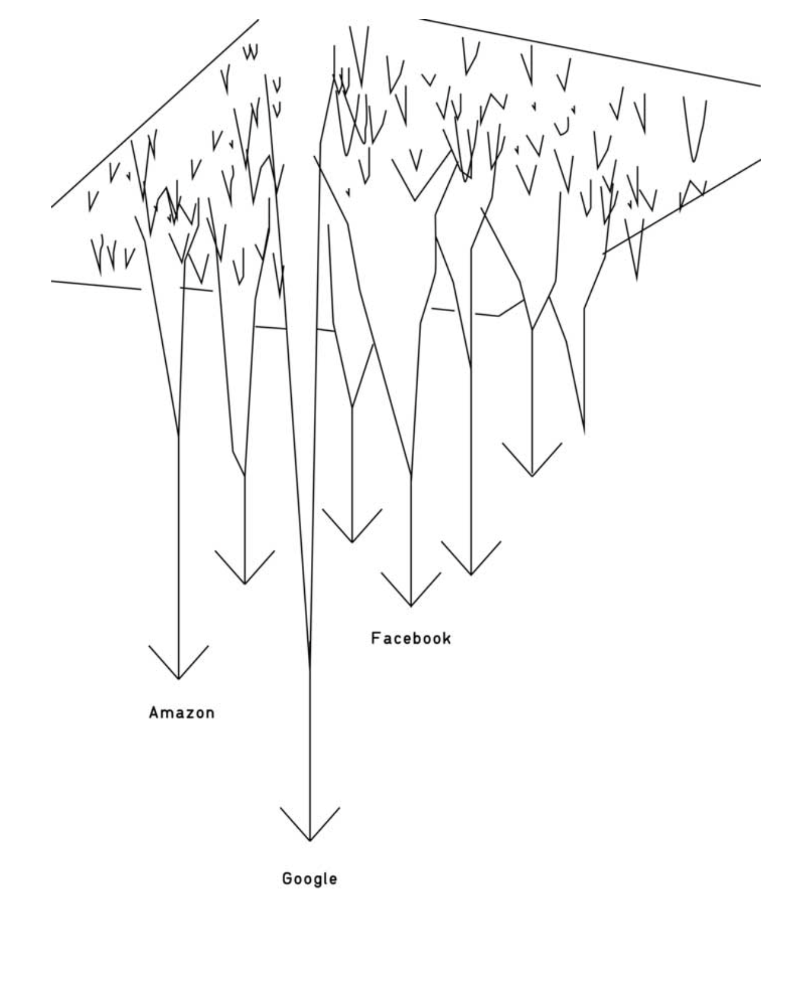

Not to be confused for the web. While the terms web and Internet are often used interchangeably in the media, they refer to different systems. The web is an information network, whose nodes are documents. In contrast the Internet is an infrastructural network, whose nodes are routers.
Capital I Internet
When I first joined the Internet in the 1990s, I found some now-long-lost introductory tutorial. It talked about the difference between an internet (lowercase i) and the Internet (capital I). An internet is “any network that connects smaller networks together.” The Internet is… well… it turns out that you don’t need more than one internet. If you have two internets, it is nearly unavoidable that someone will soon figure out how to connect them together. All you need is one person to build that one link, and your two internets become one. By induction then, the Internet is the end result when you make it easy enough for a single motivated individual to join one internet to another, however badly.
See: Postel’s Law
Niche at scale
The Internet allows you to scale any niche obsession
Location-based scaling before usually meant smaller audiences. Now, larger cities (and the internet at large) has allowed audience sizes to grow to ridiculous amounts.
Centralization of Content and Services
Imagine the surface of the web as a representation of its potential activity. A few heavyweight players have dug into the web surface, dragging activities down their slopes, activities that could have remained independent and decentralized.
Instead of creating a new webpage, Internet professionals and private users tend to go to a Facebook Page and therefore open content hosted on the slope of a dominant curve.

Theories / Models of Thinking
- Mangrove Theory of the Internet
- Dark Forest Theory of the Internet
- The Internet Is a Collective Hallucination (digital permanence)
- A friction-ful Internet
- Moving Castles and Wizards
Internet Epistemology
Traditional
- expertise-based
- hierarchical
- institutionally-mediated
- education, positions of authority
Internet
- crowd-based
- broad and distributed
- technologically-mediated
- popularity, usefulness, influence
- data and metrics
- post-truth?
- truth and facts as constructed, contested notions
- product of low trust and highly polarized information environment
- information becomes fact
- see: gate keeping
Moderation
Source: The Internet Is Rotting in The Atlantic
“So the internet was a recipe for mortar, with an invitation for anyone, and everyone, to bring their own bricks.”
This absence of central control, or even easy central monitoring, has long been celebrated as an instrument of grassroots democracy and freedom.
Gap of responsibility: Their designs naturally create gaps of responsibility for maintaining valuable content that others rely on.
“It’s not trivial to censor a network as organic and decentralized as the internet. But more recently, these features have been understood to facilitate vectors for individual harassment and societal destabilization, with no easy gating points through which to remove or label malicious work not under the umbrellas of the major social-media platforms, or to quickly identify their sources.”
“10 years ago, a third-party bookseller offered a well-known book in Kindle format on Amazon for 99 cents a copy, mistakenly thinking it was no longer under copyright. Once the error was noted, Amazon—in something of a panic—reached into every Kindle that had downloaded the book and deleted it. The book was, fittingly enough, George Orwell’s 1984. (You don’t have 1984. In fact, you never had 1984. There is no such book as 1984.)”
“Indeed, Wikipedia suffers from vandalism, and over time, its sustaining community has developed tools and practices for dealing with it that didn’t exist when Wikipedia was created. If they’d been implemented too soon, the extra hurdles to starting and editing pages might have deterred many of the contributions that got Wikipedia going to begin with.”
Curious about how this relates to ephemereal content. Is moderation and managing rot thereby a form of maintenance?
Fire as a Metaphor for the web
Fire is a chief metaphor for the Internet: it is metaorganic; it extends the range of (informational) food; it empowers people to explore new time zones (the night) and territories of knowledge; it increases some kinds of sociability, demands ongoing maintenance, and produces dangers and externalities that did not exist before. Fire was the first World Wide Web, a fragile system for contagious spreads. Young people now stay up late looking at flickering firelights—TV screens, computer monitors, smart phones—as they once tended the communal well of flames. (Television has always been compared to the family hearth.)
…
Internet videos for restoring the power of the embodied voice speaking around the campfire. We “burn” discs on our computers. Memes and themes tear through the Internet like prairie fires, or are retarded by censorship “firewalls” such as those of the Chinese government. The server farms that are key to the material infrastructure of the Internet generate vast amounts of heat, requiring air conditioning in addition to the electricity their processing takes up. (Data centers are often built in cold climates to save on cooling costs.) Touchscreen technologies fulfill a certain fantasy of touching flame. As Paul Frosh notes, “Television and computer screens (including iPads etc.) have some of the qualities of fire, especially self-illumination; unlike cinema and print, they are lit from within.” Information is irreducibly connected with heat and burning.
(The Marvelous Clouds: Toward a Philosophy of Elemental Media)